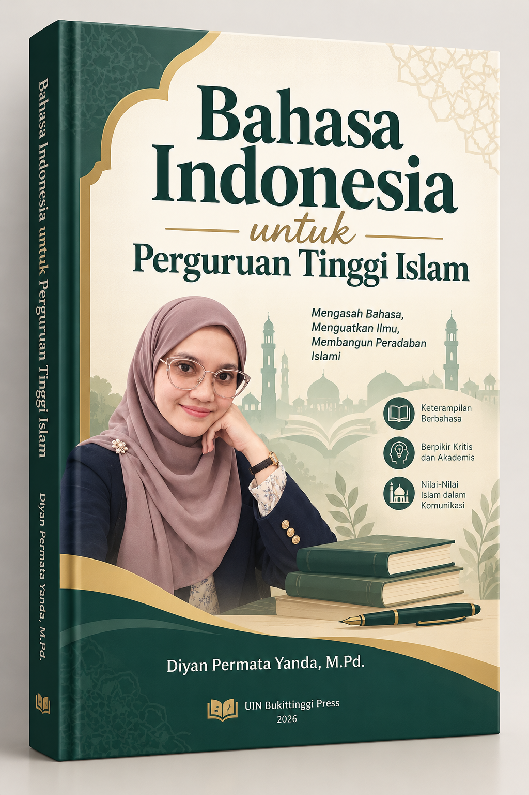

"Menyatukan kaidah kebahasaan, integritas akademik, dan nilai-nilai keislaman dalam komunikasi ilmiah yang santun dan bermartabat."

Buku ajar ini dirancang khusus bagi mahasiswa Perguruan Tinggi Islam untuk menguasai Bahasa Indonesia akademik — mulai dari sejarah, ejaan, diksi, hingga penulisan artikel ilmiah dan presentasi profesional.
Setiap pertemuan dirancang dengan pendekatan Problem-Based Learning dan Project-Based Learning, dipadukan dengan nilai-nilai keislaman melalui integrasi ayat-ayat Al-Qur'an.
Pengantar mata kuliah, ruang lingkup materi, komposisi penilaian, dan eksplorasi referensi relevan sepanjang semester.
Buka Materi →Perjalanan Bahasa Melayu hingga pengikraran Sumpah Pemuda, kedudukan, fungsi, dan keberterimaan sebagai bahasa persatuan.
Buka Materi →Analisis ragam baku, sosial, fungsional, serta pemilihan ragam berdasarkan media, waktu, dan pesan komunikasi.
Buka Materi →Sejarah ejaan bahasa Indonesia, prinsip dasar penulisan huruf, dan kaidah penulisan kata yang baku.
Buka Materi →Penggunaan tanda baca yang tepat, analisis kesalahan ejaan dalam teks akademik, dan penerapan kaidah ejaan secara konsisten.
Buka Materi →Ketepatan dan kesesuaian diksi, klasifikasi kosakata, serta pemanfaatan kamus untuk penulisan akademik yang presisi.
Buka Materi →Unsur, ciri-ciri, dan faktor penyebab ketidakefektifan kalimat. Latihan menyusun dan merevisi kalimat sesuai kaidah bahasa.
Buka Materi → Ujian Tengah SemesterEvaluasi komprehensif materi pertemuan 1–7: sejarah bahasa, ragam bahasa, ejaan, diksi, dan kalimat efektif.
Lihat Detail →Pengertian, jenis, persyaratan paragraf, serta pola pengembangan paragraf untuk karya ilmiah yang koheren.
Buka Materi →Konsep, ciri-ciri, jenis esai, serta teknik menyusun kerangka dan menulis esai dengan menjaga orisinalitas karya.
Buka Materi →Konsep, wujud, struktur, dan ciri-ciri karangan ilmiah. Analisis perbedaan esai dan karangan ilmiah.
Buka Materi →Etika sitasi, bahaya plagiarisme, serta penguasaan aplikasi Mendeley untuk sitasi dan daftar pustaka otomatis.
Buka Materi →Hakikat, ciri-ciri, jenis, dan struktur artikel ilmiah. Penerapan etika akademik dan kaidah bahasa dalam penulisan artikel.
Buka Materi →Persiapan presentasi ilmiah, teknik komunikasi lisan, serta etika menanggapi pertanyaan dan kritik dari audiens.
Buka Materi →Format resmi surat lamaran kerja, penggunaan bahasa formal, serta praktik simulasi wawancara kerja yang efektif.
Buka Materi → Ujian Akhir SemesterEvaluasi akhir komprehensif seluruh materi semester, termasuk proyek artikel ilmiah dan presentasi.
Lihat Detail →